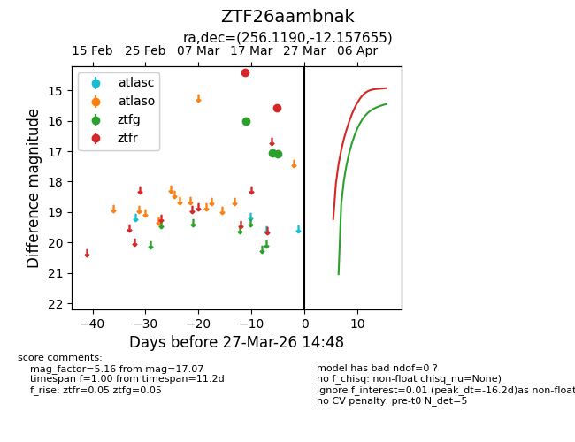
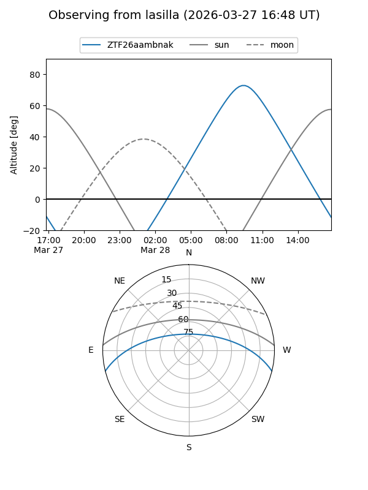
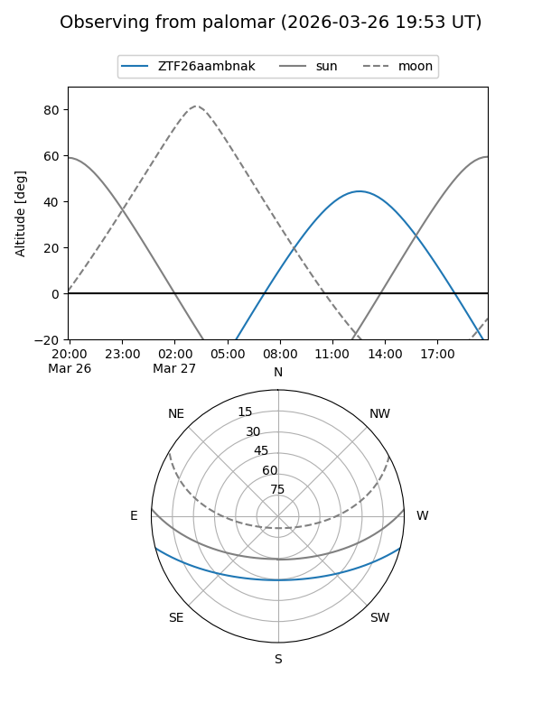
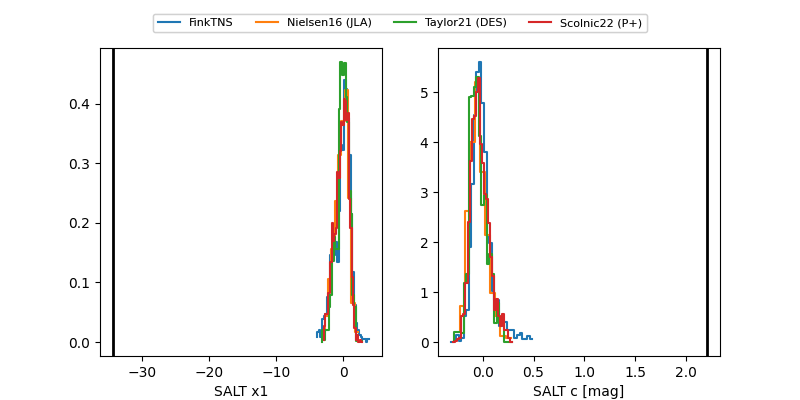

ZTF26aambnak
Target ZTF26aambnak at 2026-03-27 14:51
Aliases and brokers:
FINK: link
Lasair: link
ALeRCE: link
alt names
ZTF26aambnak (ztf,fink_ztf)
Coordinates:
equatorial (ra, dec) = 256.1190,-12.15765
equatorial (HMS+DMS) = 17:04:28.56,-12:09:27.56
galactic (l, b) = (8.9699,+17.18378)
Flags:
Photometry:
last ztfg=17.07, ztfr=15.58
3 ztfg, 2 ztfr detections
Lightcurve

Visibility


Additional plots
